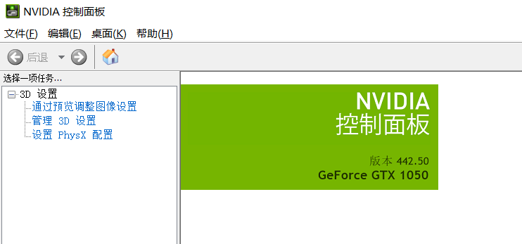
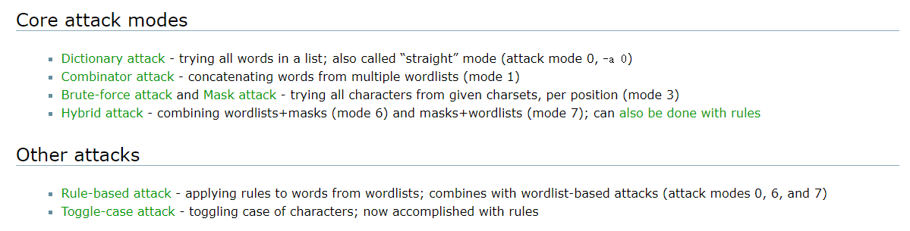
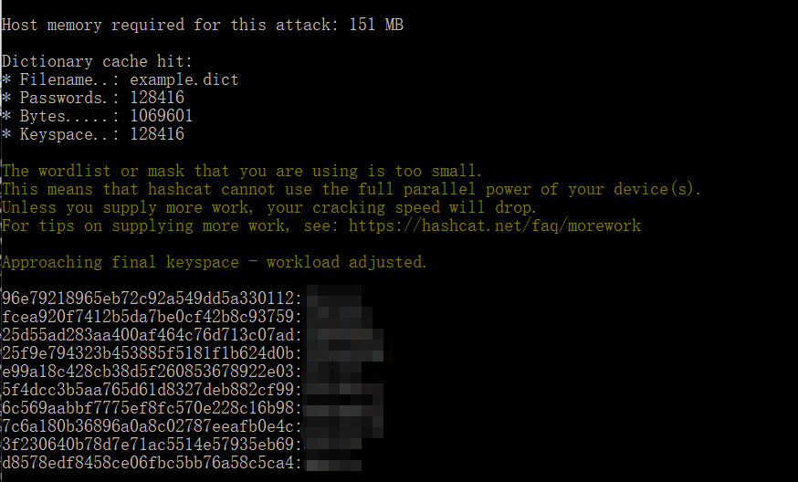
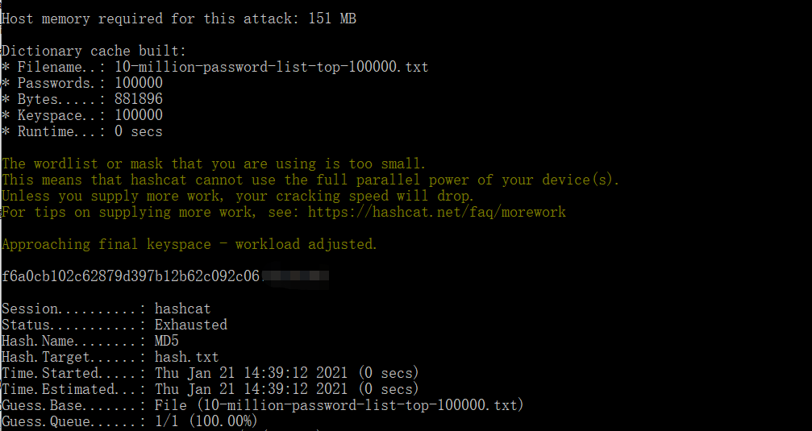
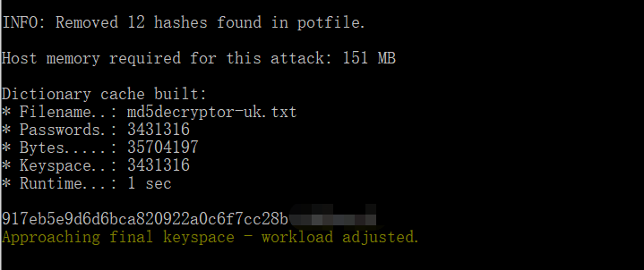
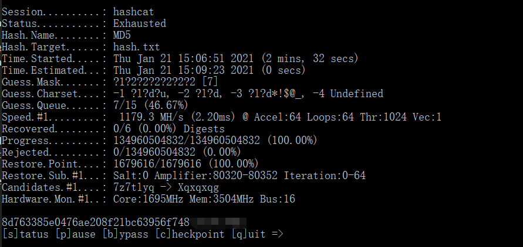
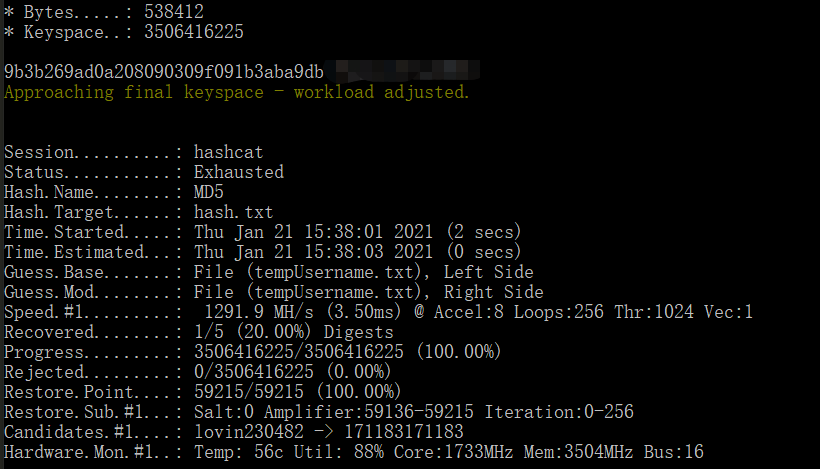
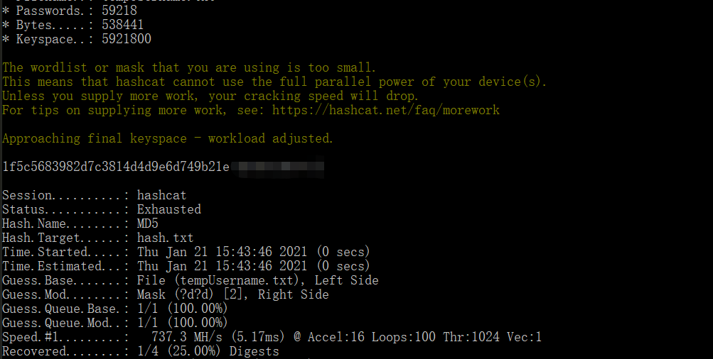
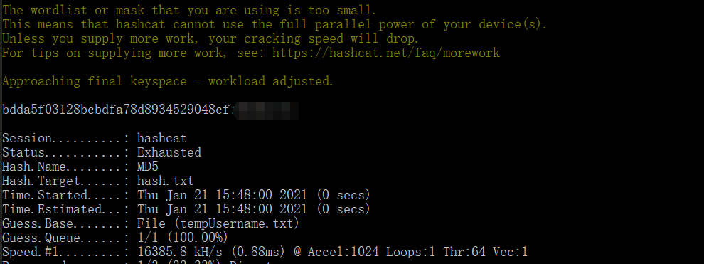
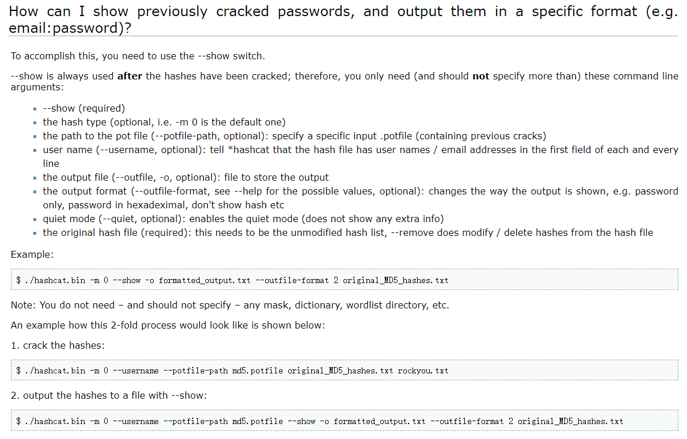

学习了四年的信息安全，但学校对实践还是稍微薄弱了写，前阵日子看见了高盛的虚拟实习，任务刚好是要求我们破解一写简单的加密密码，趁着两天比较闲，试着学习了一下工具，收获还是很多的，最后整理成了报告并拿到了实习证明。不过报告篇幅被限制成一页，需要回答的事情也被固定了，有的事情没有来得及整理，尤其因为第一次搞破解密码的实战，所以还是有点没有条理，但破解本身真的很有意思，总结破解思路也算是给自己做一个复盘叭！
不过答案不会剧透，实习证明会贬值的（
# 工具
- Hashcat：https://hashcat.net/hashcat/
- 字典参考： https://github.com/danielmiessler/SecLists/blob/master/Passwords/Common-Credentials/10-million-password-list-top-100000.txt
操作系统：Windows10
Hashcat 使用 GPU 加速，并提供了多种破解方法。下载 binaries 即可，解压到文件夹就能用，需要提前确认 GPU Driver requirements 是否符合要求，如截止本博客（20210125），Hashcat 对 NVIDIA GPUs 的要求至少为 440.64 版本，打开 NVIDIA 控制面板进行查看：

接着说怎么用 Hashcat 这个工具，打开 Hashcat 的 Wiki，对应 Core attack modes 有四种破解方法，简单来说：
- 字典模式：单一字典进行破解，具体字典选择可以看上面推荐的工程，里面有很多字典
- 组合模式：可以使用两个字典进行排列组合，会根据字典 A + 字典 B 拼凑出的密码进行遍历
- 暴力破解和掩码破解：暴力破解不用多说，掩码破解是通过指定密码特征进行破解，有对应的字符集（charsets）
- 混合破解：使用字典 + 掩码的方式进行攻击
然后两个其他方式，在此次实习中没有使用过，之后有机会再补充完善：

# 破解历程
需要注意的是，文件为用户名：密码的形式，所以在使用 Hashcat 是需要加入指令 --username 提醒工具存在用户名，否则 Hashcat 会对密码长度进行报错！
字典模式就可以解决很多简单密码的破解，找个合适的常用字典就行
hashcat.exe -m 0 -a 0 hash.txt example.dict --username // 该命令使用的 Hashcat 自带的字典



- 用 combination：hashcat.exe -m 0 -a 1 hash.txt 10-million-password-list-top-1000000.txt 10-million-password-list-top-1000000.txt --username 没跑出来，学习暴力破解

- 受上个破解结果启发，根据人物信息写了字典，跑出来了一个

该密码结构为姓名 + 数字，受其启发，会不会是姓名 + 数字，但是数字字典没有，故 hybrid 模式，字典 + 掩码，跑出来一个
hashcat.exe -m 0 -a 6 hash.txt tempUsername.txt ?d?d --username

- 中途修改了一下字典，加入了开头大写 or l 变 1，o 变 0 的情况

- 剩下 oranoilo 和 nabox，5 位？a 没跑出来，8 位时间太长，直接死机了，放弃（推测是可能与特殊符号相关）
对结果显示方式的设定可见官方提供的常见问题，不得不说他们的官方真的很贴心，只要耐心阅读你可以知道一切，论坛也很完善很容易找到类似的问题😘

# 思路总结
- 一个好的字典可以帮助解决很多事情，先尝试利用字典模式（-a 0）将简单密码进行破解
- 在字典爆破不出新密码后，要考虑密码中是否有个人信息，这种情况字典中肯定是没有的，需要自行将信息剥离出自制字典，需涉及到的情况：
- 正常个人信息
- 首字母大写 or 全部大写
- 0 <-> o ，1 <-> l 等
- 自制字典先用 - a 0 跑一次，然后在考虑加入其他字典或掩码
- 暴力破解可以，但对电脑负荷很大建议使用掩码进行（?a 是个好东西）